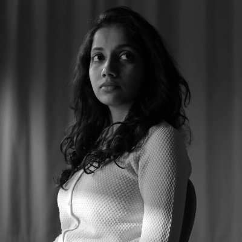

218 MIN | COLOR | 2018
Production and Editing: Anand Patwardhan
Production Assistance: Simantini Dhuru, Shrujana Shridhar, Barkha Naik, Utkarsh, Shashwat & Shashi Mehta
Camera and Sound: Anand Patwardhan, Simantini Dhuru
Sound Mixing: PM Satheesh
LOGLINE
Reason takes us to a macrocosm – India, the world’s largest democracy. Its eight chapters are a chilling account of how murder and mind control are being applied to systematically dismantle secular democracy in a country which once aspired not just to Liberty, Egalite and Fraternity, but to lead the post-war world out of its mindless spiral of violence and greed.
Those who witnessed the scientific spirit fostered by the Enlightenment would scarcely believe that over 400 years later, Faith would still have an upper hand over Reason.
Today as technologically advanced nations still debate the merits of Creationism and Evolution, the developing world falls prey to blind faith and religious war.
Everywhere privatization and a rush to corner ever-depleting natural resources has catapulted corporates and their extreme right wing storm-troopers into power.
With the collapse of egalitarian values, democracy itself is under siege. That we, the temporarily comfortable, rarely notice, is because an embedded media controls both information and entertainment. We see what they want us to see and quickly tire of seeing anything that matters.
And yet the battle for Reason is not lost. Even as Brahminism (a priest ordained caste hierarchy that withheld knowledge from the working castes) drapes itself in the national flag and sends out its hit squads, resistance has not ended. For every brave rationalist gunned down or driven to suicide, many more take up the mantle.
Reason is then both a warning and a promise.
PRESS
MEET THE TEAM
Anant Patwardhan
DIRECTOR | PRODUCER | CINEMATOGRAPHER | EDITOR
Anand Patwardhan has been making socio-political documentaries for over five decades pursuing diverse contr...oversial issues that are at the crux of social and political life in India. Many of his films were at one time or another banned by state television channels in India and became the subject of litigation by Anand who successfully challenged the censorship rulings in court.
Simantini Dhuru
CINEMATOGRAPHER | PRODUCER
Simantini Dhuru is a documentary film-maker with many awards to her credit. She has been a member of sever...al State and National policy making bodies. She is actively involved in various human rights and environmental movements as a media activist and documentary film-maker.
P. M. Satheesh
SOUND DESIGN
PM Satheesh is an Indian film sound designer, sound editor and mixer. In 1999 he received the National awa...rd for best sound recording and design for his work on Kumar Talkies. He has worked in Hollywood, Hindi, Telugu, Tamil and Malayalam films.

Barkha Naik
PRODUCER
Barkha Naik is a filmmaker and a producer from Goa. She won the prestigious national award – Silver Con...ch – the Best Short Fiction Film award for her Konkani short film ‘Salt’, at the 18th Mumbai International Film Festival (MIFF). She graduated from the Prague Film and Television Institute in Czechoslovakia. She has also worked as Vishwal Bhardwaj’s Director’s Assistant.